Exploration of Data on Courses at the University of Michigan

Project Type: Exploratory Data Analysis
Date: September 2017 - December 2017
Role: Data Manipulator and Analyst
Work Setting: Team of 4
Tools: Python, Pandas, C++, Tableau
The Project
Overview
This project revolved around discovering relations between student opinion surveys and academic performance in the same classes across various departments in the University of Michigan. The initial goal was to find which majors or departments provided the most difficult curriculum. As the project evolved, the goal turned out to be too narrow in scope and the available data to determine any sort of ranking amongst subjects was either too limited or too subjective. Our group pivoted towards simply exploring the relations between the answers to various aspects of the student surveys and any potential correlation with academic performance.
This was done by examining and exploring student course-evaluation data from the University of Michigan Academic Reporting Tools website and grade distribution data from the Umich Courses website. These two data sources provided anonymous, aggregated student survey and course performance data from classes over the last three to four years with “high-volume” enrollments to preserve student anonymity.
The Process
Data Processing: Umich Courses Data
The first dataset that we cleaned and organized was grade distribution data for courses at the University of Michigan from umichcourses.com. The Umich Courses data was in a format that was quite difficult to analyze and contained far more information than we were interested in.
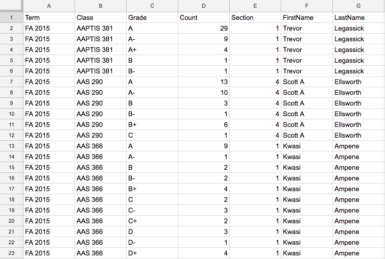For each course, there was a line on our CSV file for each grade given and the count of that grade, as well as other superfluous information that we were not interested in. To make it more manageable we needed a way to get easy to digest distributions per-class. We created a C++ program that takes in all the data for every grade entry for each class and prints them to a CSV by class instead of grade. It was designed to be extensible so that one could comment out a few lines and get distributions by department, class, professor, etc.
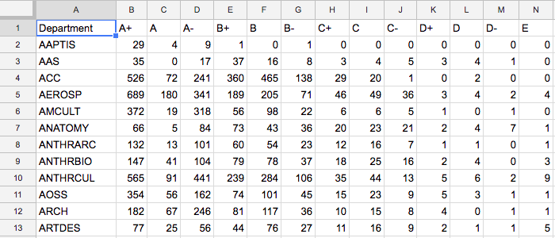Data Processing: Umich Courses Data
Our second source of data, ART, came from on website that provides data from student evaluations of courses, art.ai.umich.edu. This student course evaluation data is collected near the end of an academic term via surveys for every course the university offers. These surveys ask students to rate different aspects of the course, such as workload or difficulty, primarily on a scale that includes “Strongly Disagree,” “Disagree,” “Neutral,” “Agree,” and “Strongly Agree.”
The CSV file containing this data was formatted so that each question response for each course was on an individual row of the CSV when formatted as a table. These rows contained the course (i.e SI 365), the question number, and the percentage of respondents who answered the question with “Agree” or “Strongly Agree.” Not all courses had percentages for each metric. However, if a course had percentages for more than one metric, there would be multiple rows in the CSV file for that course; each row containing the question number and percentage for one of the questions.
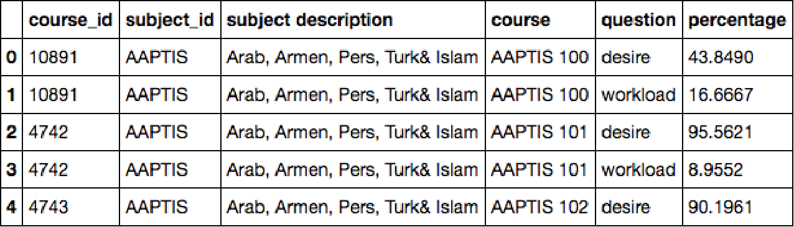Our first step in cleaning this data was to use Python’s Pandas package to convert the CSV into a Pandas DataFrame. This created a basic table structure that allowed for easy manipulation and cleaning of data using built-in Pandas functionality. After this, the next step was to consolidate each course down to one row with columns for the course and each question metric.
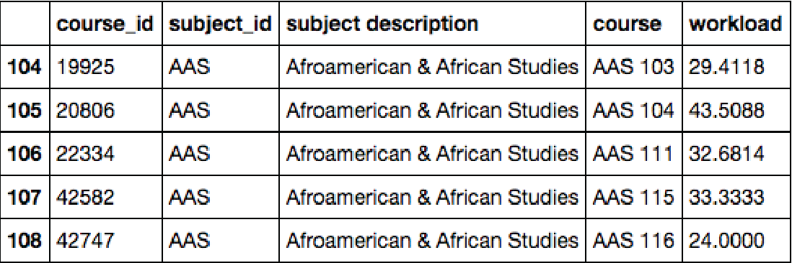The next step of cleaning this data was to think about future merging, aggregation, and classification of the data. With this in mind, we chose to add a column to each row for the subject ID of each course. This was just the subject code of each course. For example, the subject ID for SI 365 would be SI, standing for School of Information.
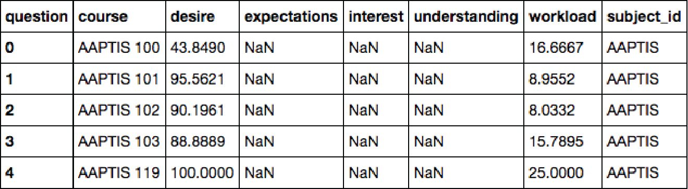The Product
Significant Findings
Students in LSA, Ross, and SMTD generally have negative associations between workload and other aspects of the class evaluation, while the opposite is true of the College of Engineering.
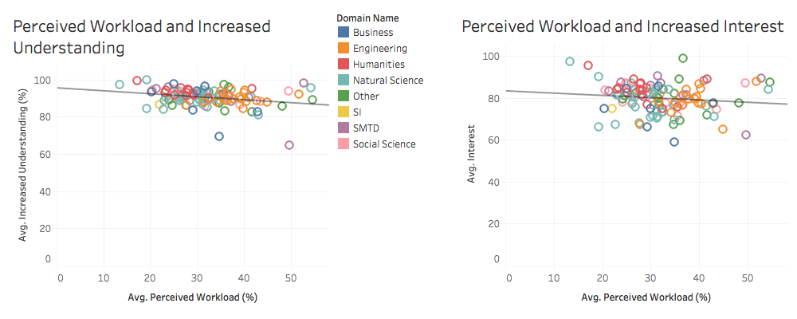Consistently across each domain, relationships between workload, interest, and expectations were significantly stronger than the relationship between desire and understanding.
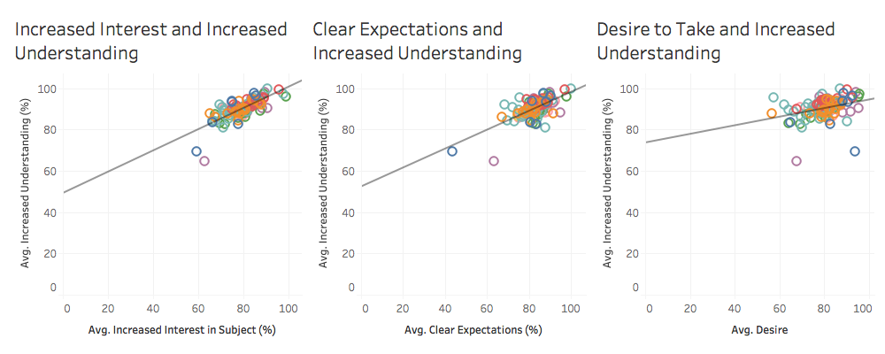Courses represented as Business, Humanities, Other, SI, and SMTD seem to have much more relaxed grading as opposed to courses represented as Engineering, Natural Science, and Social Science, all which seem to have relatively harsh grading.
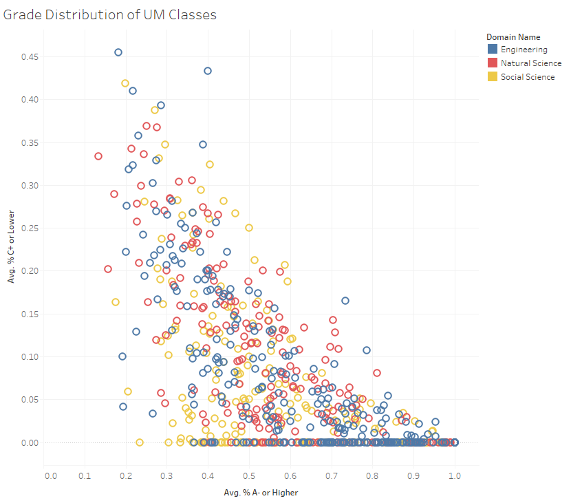 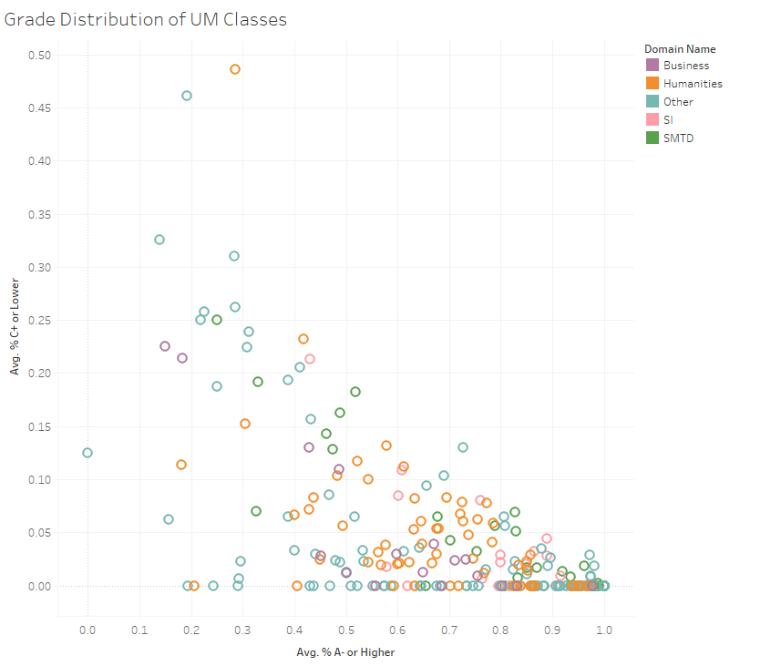SMTD often has the most drastic correlations between grade distribution and compared ART variables.
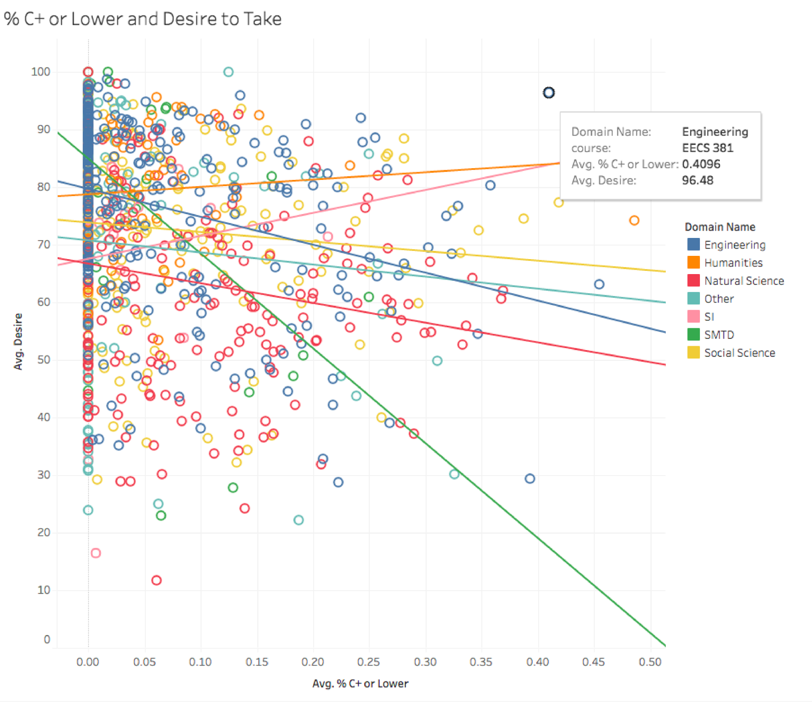 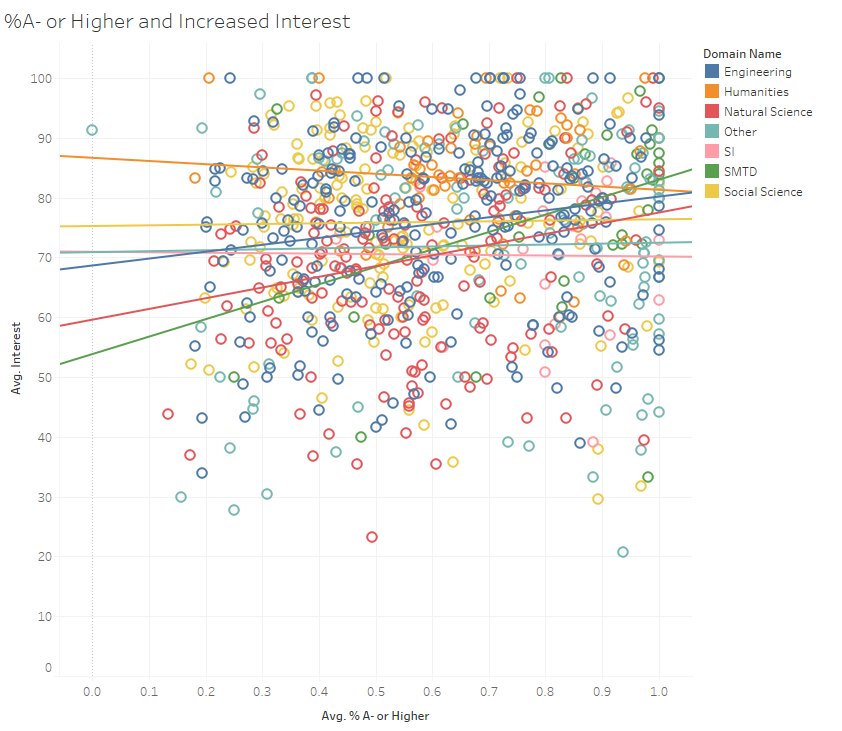There are always a few courses that seem to be insightful and interesting, comprehensible, or desirable regardless of harsh grading. These, more often than not, are upper level courses that students usually take after their freshman and sophomore years at the university.
There seems to often be a few courses that dictate whether a domain has a positive or negative correlation between two variable. These are often the courses that grade most harshly. This is visible with the SI domain.
Opportunities for Further Research
What are the implications of more harsh grading in Engineering, Natural Science, and Social Science? Are individual colleges represented by these domains more highly praised than those of the Business, Humanities, Other, SI, and SMTD.
Why does SMTD have more dramatic correlations between variables that other domains? Is this due to the juxtaposition of the need for constant practicing and physical skill with often higher grades given out to SMTD students?
How do these harsh grading, interesting, understandable, and desirable upper level courses reflect on student motivation and interest in their first two years while taking introductory courses as compared to their second two years while taking more specific and tailored courses?
If we were to single out specific subjects rather than domains, would we see more courses that dictate the direction of correlation between Umich Courses grade distributions and ART metrics similar to what we saw for SI with SI 106?
References
Academic Reporting Tools, The Regents of the University of Michigan, https://art.ai.umich.edu/. Accessed Dec. 2017.
Herron, Michael C., and Zachary D. Markovich. "Student sorting and implications for grade inflation." Rationality and Society, vol. 29, no. 3, 18 Apr. 2017, pp. 355-86. Accessed Dec. 2017.
Kyndt, E., Dochy, F., Struyven, K. "The perception of workload and task complexity and its influence on students' approaches to learning: a study in higher education." Eur J Psychol Educ (2011) 26: 393. https://doi-org.proxy.lib.umich.edu/10.1007/s10212-010-0053-2. Accessed Dec. 2017.
Marsh, Herbert W. "Effects of grading leniency and low workload on students' evaluations of teaching: Popular myth, bias, validity, or innocent bystanders?" Journal of Educational Psychology, vol. 92, no. 1, pp. 202-28. Accessed Dec. 2017.
Summary, R. & Weber, W.L. “Grade inflation or productivity growth? An analysis of changing grade distributions at a regional university.” J Prod Anal (2012) 38: 95. https://doi-org.proxy.lib.umich.edu/10.1007/s11123-011-0259-6. Accessed Dec. 2017.
Umich Courses, umichcourses.com/. Accessed Dec. 2017.